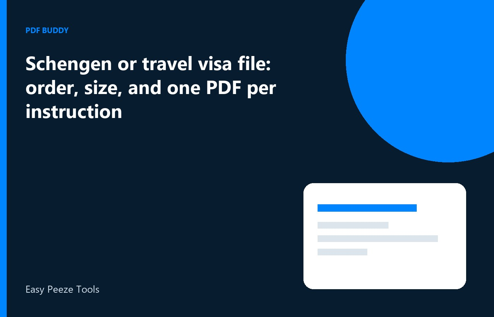

Travellers in India often meet a Schengen or embassy checklist as a week of downloads: the form, a cover letter, insurance, flight tickets, a hotel voucher, and bank statements from net banking. The counter and the upload link usually want those as separate PDFs, in the order the instruction lists, each under a size cap written on that form. One blended file looks complete and still gets a remark because item six cannot be found. Spend an evening on the PC turning each line into its own named PDF, check the size before you click upload, and carry that folder. The appointment is calmer when you are not renaming camera photos in the waiting room.
One PDF per checklist line
A travel visa checklist is a list of separate proofs, not a request for one long binder. The line for insurance is not the same slot as the line for stay bookings. When those land in a single merged file, the person checking the set has to scroll and guess where one item ends. Make one PDF for each line the instruction names. Leave a merge for the day that centre writes that it wants a single combined file. Until then, separate files are easier to replace if one page is sent back. Keep the originals in a subfolder so a fresh export does not start from a photo.
Read the checklist twice and number your files in that same order, even if your own logic would put the passport copy first. Some Schengen lists put the application form and photograph sheet ahead of money papers. A file that is correct but out of order still creates a delay at a busy VFS desk. If a line says 'not required' for your employment type, do not upload an empty PDF to fill the gap. Empty files look like missing scans. Skip that line and follow the note beside it.
- Form and cover letter as their own PDFs
- Insurance, flights, and stay proof as separate files
- Bank statements only for the months the list names
- Employment or leave letter if that line applies to you
File names the counter can match
Name each file with the checklist words, not with the scan shop's default IMG name. A clear pattern is a short trip label, then the document, then the month, such as Schengen-Insurance-Oct2026.pdf. Staff and upload forms search by those words. A poetic file name wastes the few minutes you have at the counter. Avoid spaces if the portal is old, and avoid pasting your full passport number into every file name on a shared PC. The folder can sit on your own machine. The public file name only needs to identify the document type.
If you download the same voucher twice, the browser will offer a name that ends in a bracket and a number. That copy is easy to upload by mistake. Delete the older download only after you open both and confirm which file has every page. Then rename the keeper. Do the rename on Windows before you connect to the visa site, because some portals keep the original file name in their receipt and a later rename on your PC will not change what they already stored.
Check size on that form, not from memory
Visa portals publish a size cap per file, and it is rarely the same number as a bank app or a mail attachment. Open the instruction beside the upload button and write the cap next to the file. If the insurance PDF is over that cap, compress that one file and open it again to see that the policy number and dates are still readable. Do not compress the whole folder to one setting. A photograph sheet and a text form do not need the same treatment. After export, check the page count. A compress step that drops a page is a failed file, even if the size looks perfect.
Colour scans of stamps can be larger than the text pages around them. If only the passport copy is heavy, export that copy on its own and leave the cover letter alone. Pdf Buddy can compress and can also turn a clean image into a PDF when the insurer sent a picture instead of a file. Work on the PC. Keep a before-and-after pair until the portal accepts the upload. If a statement PDF asks for a password, use the password your bank already sent you. You need that password. Guessing or stripping it is not part of preparing a visa file.
What to leave out of the pack
Extra pages feel helpful and often hurt. A 12-month statement, old hotel bookings from a cancelled trip, and a relative's insurance card do not answer the line in front of you. They add size and they invite questions. Include the months and the travellers the instruction names. If a child is on the same appointment, keep that child's passport copy in a clearly named file, not as a surprise page at the end of yours. Mixed identities in one PDF are a common reason a family set is marked incomplete.
When the set is accepted, copy the folder to a drive you control and do not delete it the same evening. Embassies sometimes ask for a replacement page days later. A camera roll is a poor archive because photos get compressed in chat apps and lose the booking reference. Store the PDFs. You are submitting documents you already have for a visa you are allowed to request, not building papers you do not hold. If a page is missing, go back to the issuer and ask for a fresh copy.
Questions people actually ask
Should the whole Schengen set be one PDF? Only when that centre's instruction says one file. Most lists want a separate PDF for insurance, stay, and bank statements. A single merge hides which pages belong to which line, and you cannot swap a rejected insurance page without rebuilding the set. Keep the separate files until the form text asks for a combined upload.
What if my bank statement PDF is locked? Use the password the bank already gave you in net banking or by SMS, then export the pages the checklist asks for. If you do not know that password, stop and request it from the bank. Preparing a visa file does not include opening a PDF when you never received the password.
Can I photograph documents at the scan shop and upload from the phone? You can capture the pages, but turn them into named PDFs on the PC and upload those files. A row of gallery pictures is easy to mix up, and chat apps reduce quality. Check each page upright, in checklist order, before you leave home.
Build the visa folder on the laptop you will carry to the appointment. Pdf Buddy, by Easy Peeze Tools, is a Windows desktop PDF editor that works on the PC, so these files are not uploaded to a random website. The free tier is 2 files a day. Pricing starts at ₹149. Start from the download page.